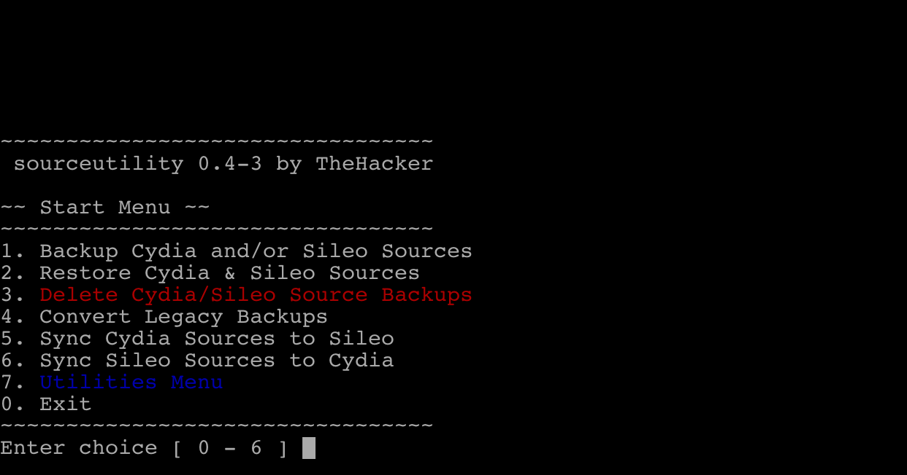
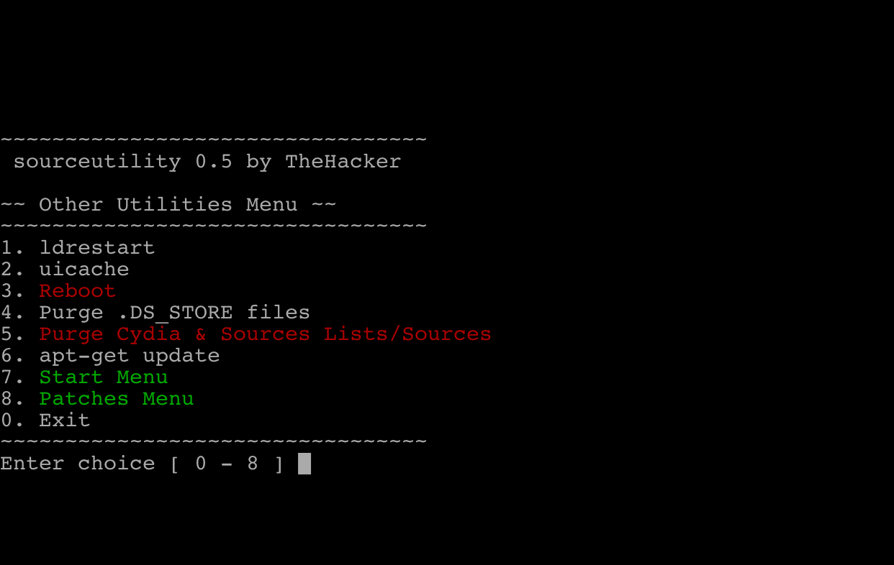

Description
-
The all-in-one utility for managing your already added Cydia and Sileo sources.
-
Run sourceutility in the terminal to get started.
-
All backups created with versions prior to 0.4, must be converted using the 'Convert Legacy Backups' option.
Simple Select Menu
-


Compatibility
-
Supports iOS 9 - 12.1.2
dependencies
-
findutils
-
firmware (>= 9.0)
Conflicts
-
xyz.skylarmccauley.sourcebackup
In this version
-
0.4-1
- After restoring a backup, users will be prompted to run installsileo to fix some small issues
-
0.4
- Rewrote how backups are made and restored. Old backups are now incompatible
- Readded ability to restore Cydia sources
- Now compatible with source lists installed to /etc/apt/sources.list.d/
- All backups made with versions prior to v0.4 MUST be converted
- General improvements to how some things work
April 5, 2019
April 5, 2019
Previous Releases
-
0.3-X
- Adjusted Select Menus for notched devices
- Added Utilities Menu
- Cleaned up the menus some more
- Added option to purge Cydia Lists & Sources (left over from debugging)
- Renamed Utilities Menu to Other Utilities Menu
- Added a reboot option in the Other Utilities Menu
- Added some red text here and there so you know which options are dangerous
-
0.2-X
- Fixed a syntax error
- Fixed issues with .DS_STORE files
- Added option to purge .DS_STORE files from previous version
- Backup your Cydia and Sileo sources.
- Restore your Cydia and Sileo source backups.
April 4, 2019
April 2, 2019
Known Issues
- No known issues. Report issues using the contact info below.
Report Issues to
- skylarmccauley864@gmail.com
- TheHacker#9367 (Discord)